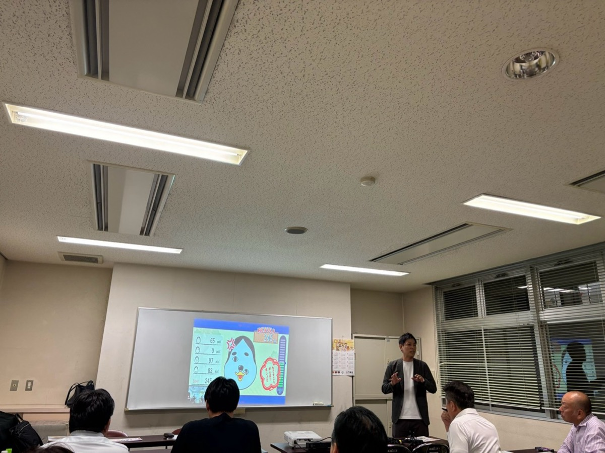
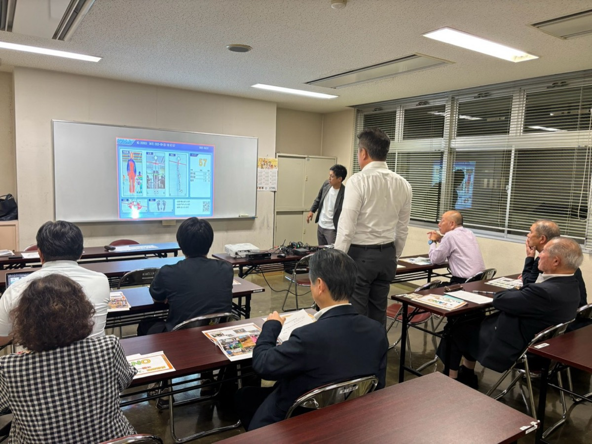
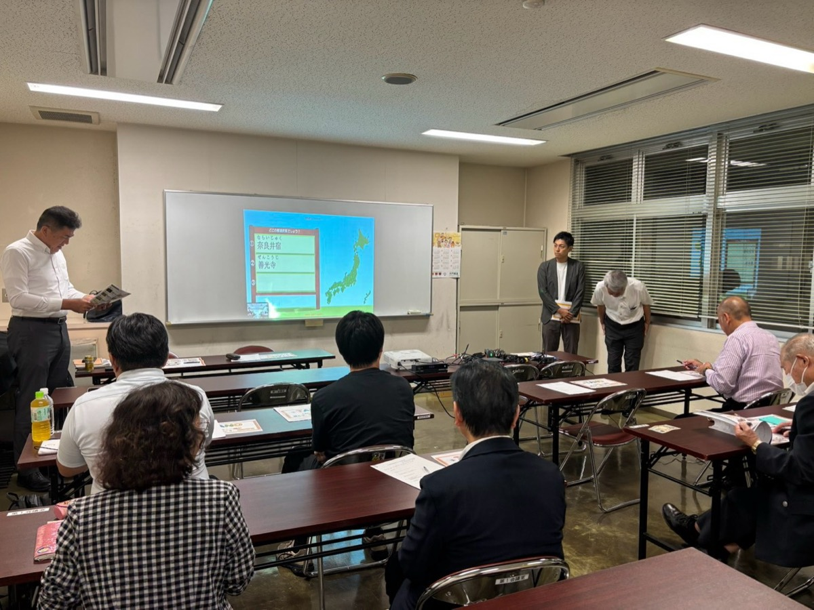

※ 本文・開催概要はレイアウト確認用のダミーです。写真は実際の活動のものです。

ここにはリード文が入ります。活動のねらいや当日の概要を2〜3行でまとめ、記事の内容が一目で伝わるようにします。
ここには本文が入ります。当日の進行や話し合われた内容、参加された方の様子などを記載します。 文章量が増えた場合の見え方を確認するため、同じ長さの段落をもう一つ置いています。 写真と本文のバランス、行間、読みやすさをこの状態でご確認ください。
当日の様子
ここには小見出し以下の本文が入ります。活動の具体的な内容や、参加者の感想などを記載する想定です。 実際の原稿をいただき次第、この部分を差し替えます。


開催概要
- 日時
- 令和8年6月25日（未確認）
- 会場
- 未確認
- 内容
- 未確認